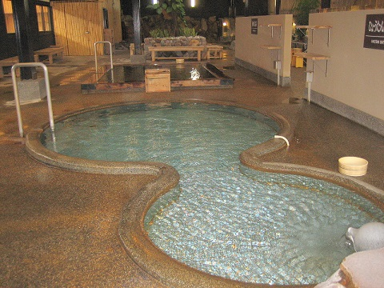

ひょうたん温泉
創業は大正11年。昔ながらの湯治場の雰囲気を残したのどかで素朴な温泉場です。
砂湯、瀧湯、露天風呂、蒸し湯、歩行湯、岩風呂、桧風呂といろいろなお風呂がありますので、ここ一ケ所で『お湯めぐり』が楽しめます。
自分で温泉卵が作れる『地獄蒸し体験コーナー』や、温泉吸入、飲泉などもあります。
一遍上人が開いたという古い歴史を持つ鉄輪温泉にある『ひょうたん温泉』・・・ あなたも慌ただしい日常を離れ、ひと時温泉の温もりに浸ってみてはいかがですか。
砂湯、瀧湯、露天風呂、蒸し湯、歩行湯、岩風呂、桧風呂といろいろなお風呂がありますので、ここ一ケ所で『お湯めぐり』が楽しめます。
自分で温泉卵が作れる『地獄蒸し体験コーナー』や、温泉吸入、飲泉などもあります。
一遍上人が開いたという古い歴史を持つ鉄輪温泉にある『ひょうたん温泉』・・・ あなたも慌ただしい日常を離れ、ひと時温泉の温もりに浸ってみてはいかがですか。
- 営業時間
- 9:00〜深夜1:00
- 料金
- 大人 750円 小学生 320円
- 温度
- ―
- 効能
- 神経痛、筋肉痛、関節痛
- アメニティ
- リンスinシャンプーなど